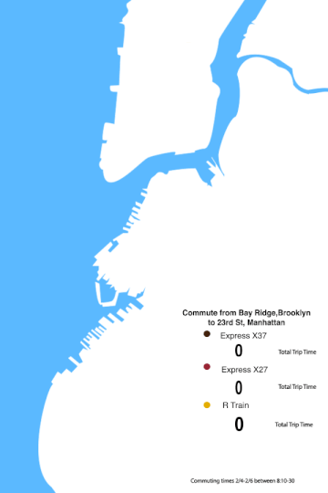

Project 1-The Interactive Map
Mapping the Commute from Bay Ridge Brooklyn to 23rd Street in Manhattan
(Published for Borough BuzzMarch 10, 2015) 
Larger version availble here
Goal
Create an interactive map of commuting times
The Story
Bay Ridge residents may have a new commuting option in 2017 - a proposed inter-borough ferry service, announced at would cost the same as a subway ride,and quickly connect Southern Brooklyn residents to lower Manhattan.
Time: 1 week (5 days)
Tears:0
Times said "After Effects was created by the Gods to punish us": 2
Inspiration
The map was inspired by interactive map from Al Jazeera America's " In Between in California" which explores people stuck between the poverty line and the middle class.
The original interactive map was created by the talented Lam Vo who in addition to producing other fantastic work for Al Jazeera America was my interactive instructor at the CUNY Graduate School of Journalism for Fall 2014.
Workflow
Photoshop --> Adobe Illustrator --> After Effects-->Photoshop